1Introducción
Propósito y alcance
Este manual describe cómo utilizar el aula interactiva de Métodos Numéricos: un sitio web educativo que reúne los 16 temas del curso, actividades de práctica y una evaluación final con certificado.
1.1 A quién va dirigido
- Estudiantes de ingeniería que cursan Métodos Numéricos o Análisis Numérico.
- Docentes que quieran usar el sitio como material de apoyo.
- Responsables del sitio, para las tareas de gestión del buzón de mensajes.
1.2 Cómo está organizado este manual
- Introducción — propósito, destinatarios y convenciones.
- Requisitos y acceso — qué hace falta y cómo entrar.
- La interfaz — descripción de las zonas comunes a todas las páginas.
- Casos de uso — 20 procedimientos completos, cada uno con su captura.
- Solución de problemas — qué hacer si algo no funciona.
- Glosario — términos empleados en el sitio.
1.3 Convenciones tipográficas
| Formato | Significado | Ejemplo |
|---|---|---|
| Negrita | Elemento de la interfaz que se debe pulsar o localizar | Pulse Jugar |
| Cursiva | Nombre de una sección o de una opción | Sección Actividades |
Monoespaciada | Dirección, archivo o valor literal | index.php |
| Tecla | Tecla del teclado | Tab |
2Requisitos
Requisitos y acceso
2.1 Requisitos del sistema
| Elemento | Requisito | Observación |
|---|---|---|
| Navegador | Chrome, Edge, Firefox o Safari en versión reciente | Debe permitir JavaScript |
| Resolución | Desde 375 px de ancho | Verificado hasta 1440 px |
| Conexión | Necesaria para las tipografías y los videos | El resto del sitio funciona sin conexión |
| Servidor | Apache con PHP 8 (XAMPP) | Solo para el formulario y el envío del certificado |
2.2 Cómo acceder
- Copie la carpeta del proyecto dentro de
htdocs:C:\xampp\htdocs\metodos. - Abra el panel de control de XAMPP e inicie Apache. No hace falta MySQL.
- En el navegador, escriba
http://localhost/metodos/.
3La interfaz
Zonas comunes a todas las páginas
Todas las páginas del sitio comparten la misma estructura, de modo que una vez aprendida sirve para cualquier sección.
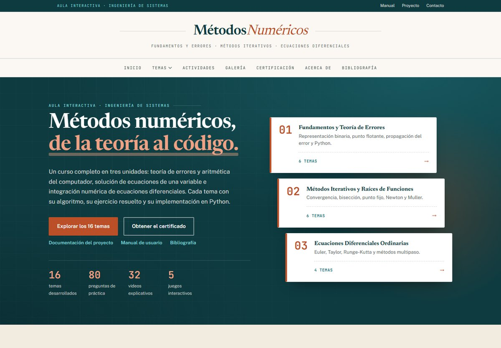
| Zona | Ubicación | Contenido |
|---|---|---|
| Barra de utilidades | Franja superior oscura | Accesos al manual, la documentación y el contacto |
| Nombre del sitio | Centrado, bajo la barra | Enlace a la página de inicio |
| Barra de navegación | Bajo el nombre | Las siete secciones principales. Queda fija al bajar |
| Contenido | Centro de la página | Varía según la sección |
| Botón de accesibilidad | Esquina inferior derecha | Tamaño de letra, contraste y lectura en voz alta |
| Pie de página | Final | Navegación, bloques, contacto y aviso de autoría |
4Casos de uso
Los 20 casos de uso del sistema
Cada caso describe una tarea completa: quién la realiza, qué necesita antes de empezar, los pasos exactos, una captura del sistema y el resultado que debe obtener.
Recorrer el sitio y localizar un tema
- Actor
- Cualquier visitante
- Objetivo
- Encontrar rápidamente el tema que se quiere estudiar entre los 16 disponibles.
Precondiciones
- Tener el sitio abierto en
http://localhost/metodos/.
Procedimiento
- Observe la cabecera. La fila superior (petróleo) contiene accesos a Manual, Proyecto y Contacto; debajo está el nombre del sitio y, más abajo, la barra de navegación.
- Sitúe el cursor sobre TEMAS y haga clic. Se despliega un menú con los 16 temas repartidos en tres bloques temáticos.
- Haga clic en el tema que desee estudiar. Cada entrada muestra su numeración (
1.1,2.3,3.4…). - Si prefiere ver todo de un vistazo, cierre el menú y baje hasta la sección Tabla de contenidos de la portada.
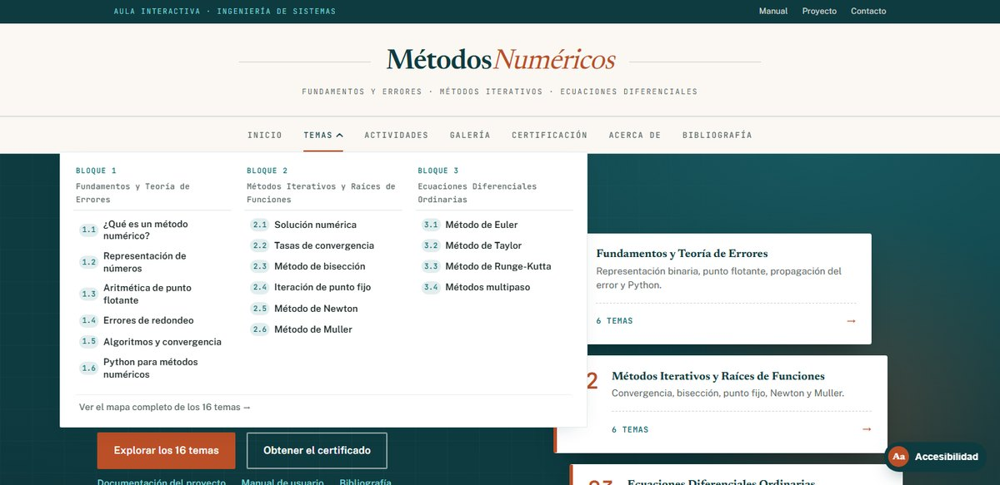
Resultado esperado
El navegador abre la página del tema seleccionado.
Consultar la tabla de contenidos del curso
- Actor
- Estudiante
- Objetivo
- Ver los 16 temas en orden y entender la progresión del curso.
Precondiciones
- Estar en la página de inicio.
Procedimiento
- Baje hasta la sección Tabla de contenidos, justo debajo de la portada.
- Recorra la lista: los temas se presentan en dos columnas, numerados de
1.1a3.4. - Haga clic sobre cualquier fila para abrir ese tema.
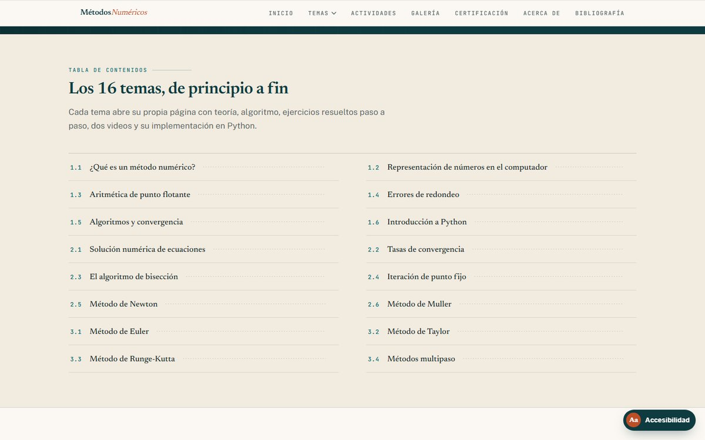
2.3 es el tercer tema del segundo bloque.Resultado esperado
Se abre la página del tema elegido.
Estudiar un tema
- Actor
- Estudiante
- Objetivo
- Leer la teoría de un tema y moverse entre sus apartados sin perderse.
Precondiciones
- Haber abierto la página de un tema (véase CU-01).
Procedimiento
- Lea la introducción, en la parte superior, que resume la idea central del método.
- Utilice el sumario lateral de la izquierda para saltar a cualquier apartado: Idea central, Algoritmo, Ejercicio resuelto, Errores comunes…
- A medida que avanza en la lectura, el apartado en el que se encuentra queda resaltado en terracota dentro del sumario.
- Consulte la tabla de iteraciones del ejercicio resuelto: cada fila es un paso del método, con su error frente al valor exacto.
- Al final de la página encontrará el banco de ejercicios propuestos. Pulse ¿Ver ejercicio resuelto? para desplegar la solución paso a paso.
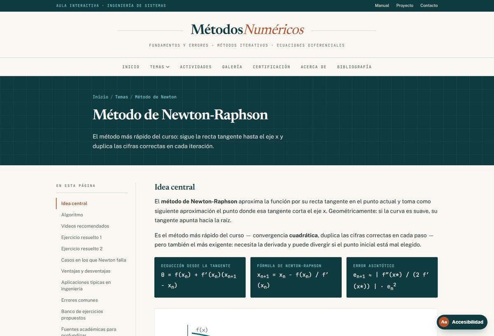
Resultado esperado
El estudiante puede recorrer todo el tema y volver a cualquier apartado con un clic.
Ver los videos explicativos de un tema
- Actor
- Estudiante
- Objetivo
- Complementar la lectura con una explicación en video.
Precondiciones
- Estar en la página de un tema.
Procedimiento
- En el sumario lateral, pulse Videos recomendados.
- Cada tema ofrece dos videos distintos del mismo contenido. Bajo cada uno se indica el canal y la duración.
- Pulse el botón de reproducción para verlo incrustado, o Ver en YouTube para abrirlo en una pestaña nueva.
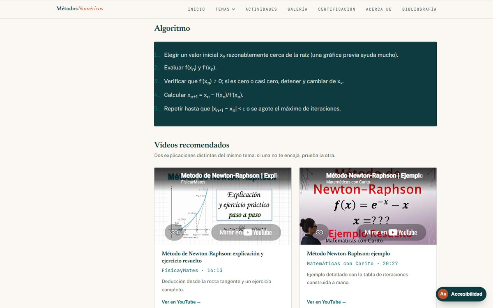
Resultado esperado
El video se reproduce dentro de la página.
Elegir el nivel de dificultad
- Actor
- Estudiante
- Objetivo
- Ajustar el tiempo por pregunta y el número de vidas antes de jugar.
Precondiciones
- Estar en la sección Actividades de la portada.
Procedimiento
- Localice la barra Dificultad, encima de las tarjetas de juego.
- Elija una de las tres opciones:
- La selección queda guardada en su navegador y se aplica a todos los juegos hasta que la cambie.
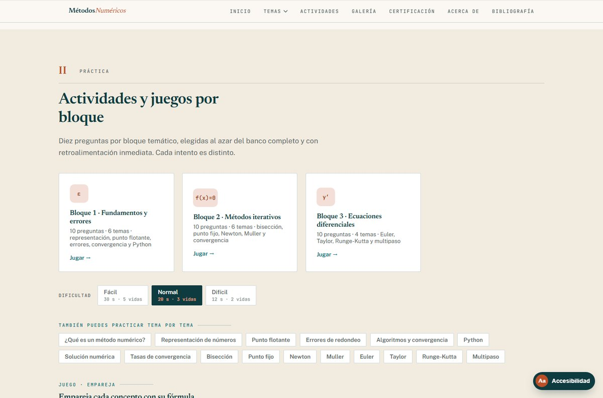
Resultado esperado
Los siguientes juegos usarán el nivel elegido.
Jugar el cuestionario de un bloque temático
- Actor
- Estudiante
- Objetivo
- Poner a prueba lo aprendido en uno de los tres bloques del curso.
Precondiciones
- Haber elegido la dificultad (CU-05), o dejar la que viene por defecto.
Procedimiento
- Pulse el botón Jugar de la tarjeta del bloque que quiera practicar. Se abre una ventana con 10 preguntas tomadas al azar.
- Observe el marcador superior: vidas (♥), racha de aciertos, puntos acumulados y el cronómetro circular de la pregunta.
- Lea la pregunta y pulse la opción que considere correcta antes de que se agote el cronómetro. Si se agota, cuenta como fallo.
- Aparece de inmediato si acertó y una breve explicación del porqué.
- La barra de segmentos bajo el marcador muestra su recorrido: verde para acierto, rojo para fallo.
- Pulse Ver siguiente ahora para avanzar sin esperar la cuenta atrás.
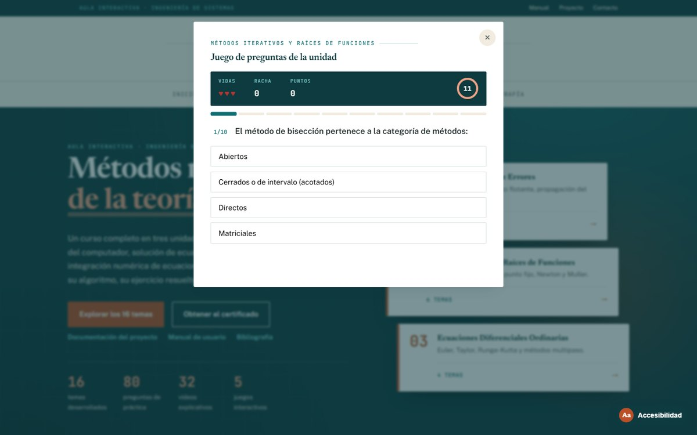
Resultado esperado
Al terminar las 10 preguntas — o al quedarse sin vidas — se muestra el resultado.
Interpretar el resultado y la medalla
- Actor
- Estudiante
- Objetivo
- Entender la puntuación obtenida y decidir el siguiente paso.
Precondiciones
- Haber terminado una partida (CU-06).
Procedimiento
- Al terminar se muestra la medalla obtenida según el porcentaje de aciertos.
- Debajo aparecen las respuestas correctas, los puntos totales, la mejor racha y la dificultad usada.
- Se indica si ha batido su récord anterior en ese juego.
- Pulse Repetir juego para otra ronda, o Repasar mis fallos para practicar solo con las preguntas que ha fallado.
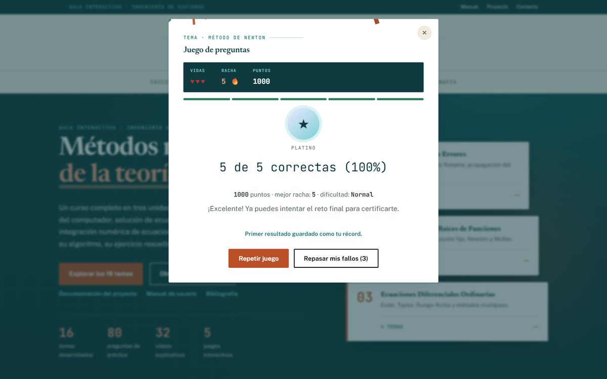
Resultado esperado
El progreso queda registrado y el panel de progreso se actualiza.
Practicar un tema concreto
- Actor
- Estudiante
- Objetivo
- Repasar un único tema en lugar de un bloque completo.
Precondiciones
- Estar en la sección Actividades.
Procedimiento
- Bajo las tarjetas de bloque, localice el grupo También puedes practicar tema por tema.
- Pulse el botón del tema que quiera repasar. Hay uno por cada uno de los 16 temas.
- El juego funciona igual que el de bloque, pero con las 5 preguntas de ese tema.
Resultado esperado
Se abre el cuestionario del tema elegido.
Jugar «Empareja»
- Actor
- Estudiante
- Objetivo
- Asociar cada concepto con su fórmula o definición, contrarreloj.
Precondiciones
- Estar en la sección Actividades.
Procedimiento
- Baje hasta Empareja cada concepto con su fórmula y pulse la tarjeta del bloque deseado.
- Se abren dos columnas: conceptos a la izquierda y fórmulas a la derecha, en desorden.
- Pulse un concepto de la izquierda; quedará marcado.
- Pulse la fórmula que le corresponde. Si acierta, la pareja se marca en verde y desaparece del juego.
- Si falla, ambas fichas parpadean en rojo, suma un error y puede volver a intentarlo.
- Complete las seis parejas lo más rápido posible.
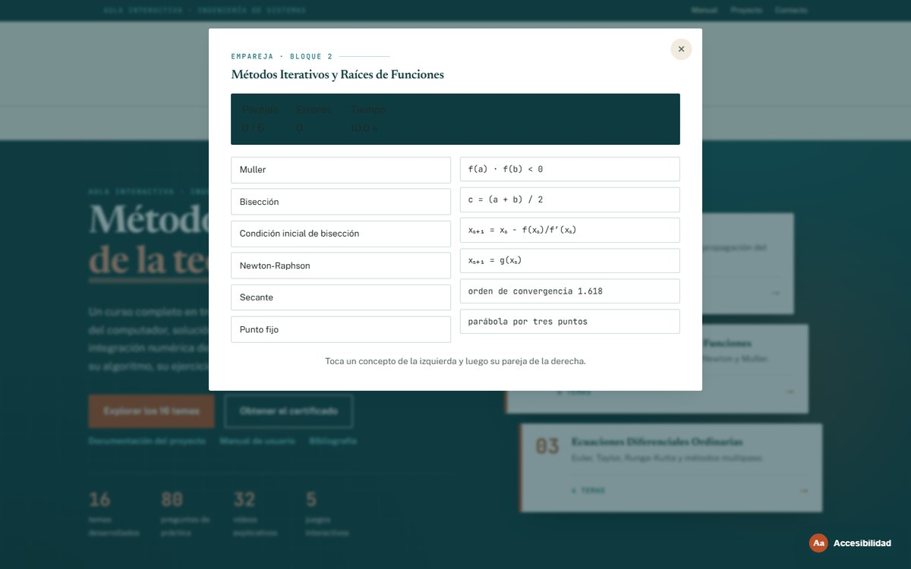
Resultado esperado
Al completar las seis parejas se muestra el tiempo final y la medalla obtenida.
Jugar el Desafío contrarreloj
- Actor
- Estudiante
- Objetivo
- Responder el mayor número de preguntas en 60 segundos.
Precondiciones
- Estar en la sección Actividades.
Procedimiento
- Pulse Jugar el Desafío. Se abre una pantalla de juego independiente.
- Lea las instrucciones y pulse el botón de inicio.
- Responda tan rápido como pueda: dispone de 60 segundos en total.
- Cada acierto encadenado aumenta el combo y multiplica los puntos; un fallo lo reinicia.
- Al acabar el tiempo se muestra su puntuación y su récord personal.
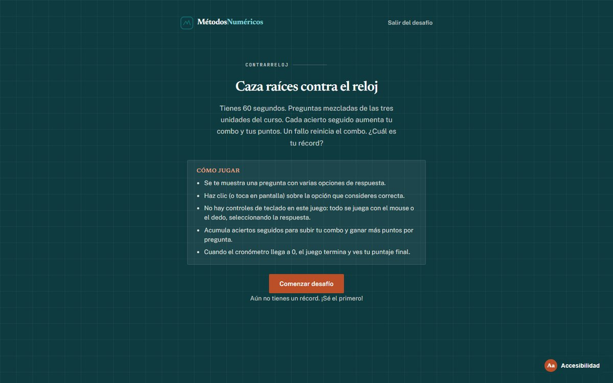
Resultado esperado
Se registra la puntuación y, si procede, un nuevo récord.
Jugar «Esquiva y Responde»
- Actor
- Estudiante
- Objetivo
- Repasar con un juego de habilidad y preguntas de verdadero o falso.
Precondiciones
- Estar en la sección Actividades.
Procedimiento
- Pulse Jugar Esquiva y Responde.
- Mueva el personaje entre los tres carriles para esquivar las rocas que caen.
- Cada cierto tiempo aparece una pregunta de Verdadero o Falso: muévase al carril izquierdo para Verdadero o al derecho para Falso.
- Mientras responde no caen rocas nuevas. Cuantas más esquive, más preguntas responderá.
- La velocidad aumenta con el tiempo.
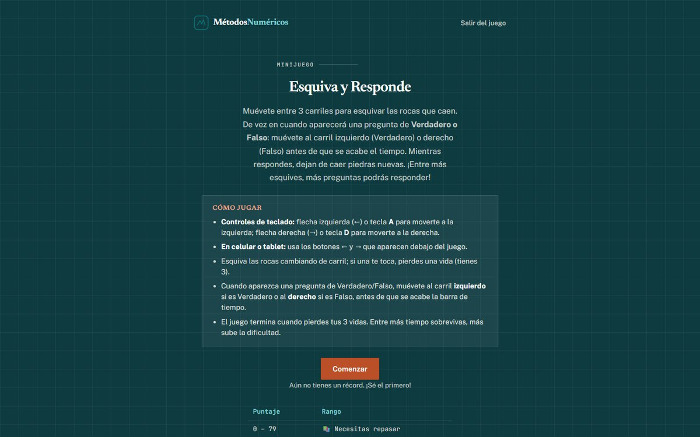
Resultado esperado
Al perder se muestra la puntuación alcanzada.
Consultar el progreso y repasar los fallos
- Actor
- Estudiante
- Objetivo
- Saber qué parte del curso domina y practicar solo lo que falla.
Precondiciones
- Haber jugado al menos una partida.
Procedimiento
- Baje hasta el bloque Tu progreso, al final de la sección de actividades.
- Cada bloque temático muestra un anillo con el porcentaje de dominio: la proporción de preguntas que ha respondido bien al menos una vez.
- Bajo el porcentaje aparece su récord de puntos en ese bloque.
- Si tiene preguntas falladas pendientes, aparece la franja Repaso inteligente con su número.
- Pulse Repasar mis fallos para jugar únicamente con esas preguntas. Cuando acierte una, sale de la lista.
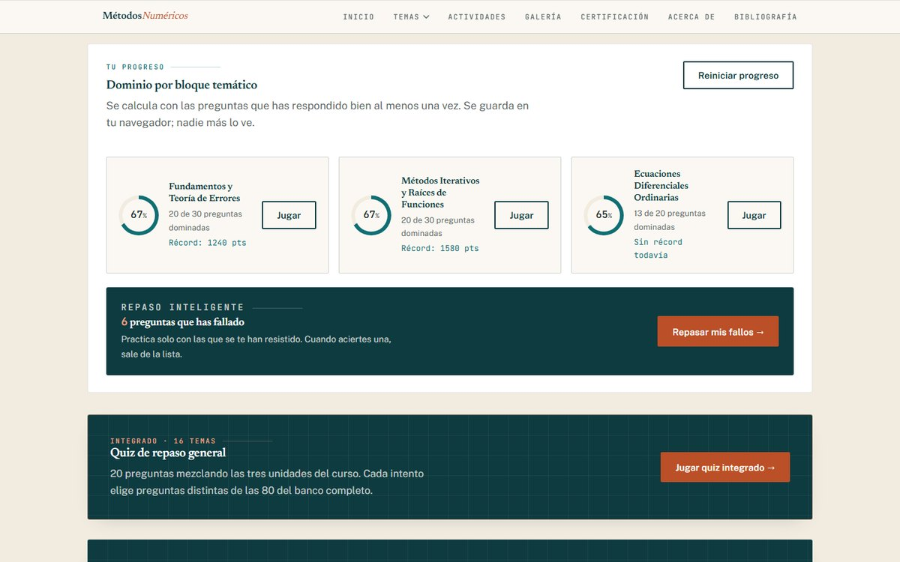
Resultado esperado
El estudiante identifica sus puntos débiles y practica dirigidamente.
Presentar la evaluación final
- Actor
- Estudiante
- Objetivo
- Superar el reto final para obtener el certificado.
Precondiciones
- Haber estudiado los temas. Se recomienda alcanzar al menos el 70 % de dominio (CU-12).
Procedimiento
- Vaya a la sección Certificación desde el menú principal.
- Lea el panel Antes de empezar: 15 preguntas, 80 % para aprobar, intentos ilimitados.
- Escriba su nombre completo tal como quiere que aparezca impreso. La vista previa de la derecha muestra cómo quedará.
- Escriba su correo electrónico.
- Pulse Iniciar la evaluación.
- Responda las 15 preguntas. La barra de segmentos indica su avance en verde y rojo.
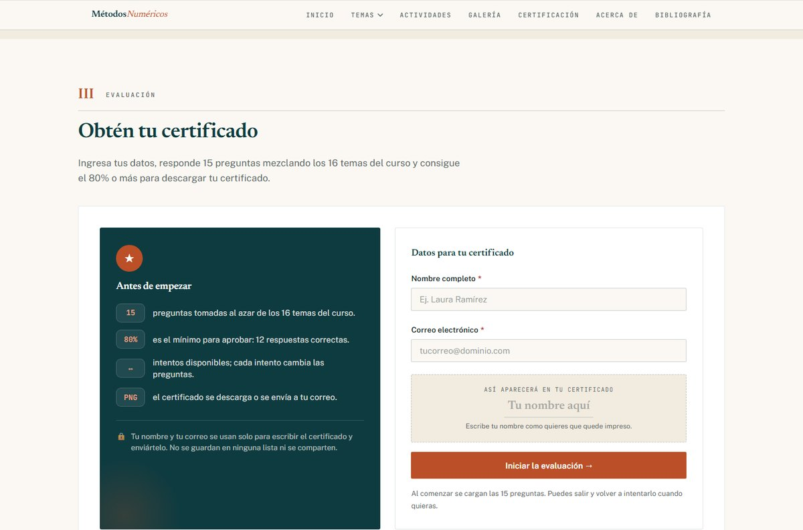
Resultado esperado
Se muestra el resultado: aprobado (≥ 80 %) o no aprobado.
Descargar o recibir el certificado
- Actor
- Estudiante que ha aprobado
- Objetivo
- Obtener el certificado en formato de imagen.
Precondiciones
- Haber obtenido el 80 % o más en la evaluación (CU-13).
Procedimiento
- Al aprobar aparece la insignia APROBADO con su puntaje.
- Debajo se genera el certificado con su nombre, los bloques del curso, el puntaje y la fecha.
- Pulse Descargar certificado (PNG) para guardarlo en su equipo.
- O pulse Enviar a mi correo para recibirlo como archivo adjunto en la dirección indicada.
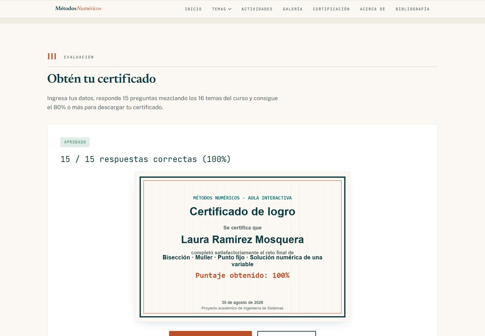
Resultado esperado
El estudiante conserva el certificado como imagen.
Enviar un mensaje de contacto
- Actor
- Cualquier visitante
- Objetivo
- Reportar un error del contenido, resolver una duda o proponer una mejora.
Precondiciones
- Estar en la página de inicio.
Procedimiento
- Vaya a la sección Contacto desde el menú o desde el pie de página.
- Complete Nombre completo y Correo electrónico.
- Elija un Asunto de la lista: duda sobre un tema, error en el contenido, problema técnico, problema con el certificado, sugerencia u otro.
- Escriba el mensaje. El contador bajo el campo indica cuántos caracteres lleva de los 1000 disponibles.
- Pulse Enviar mensaje.
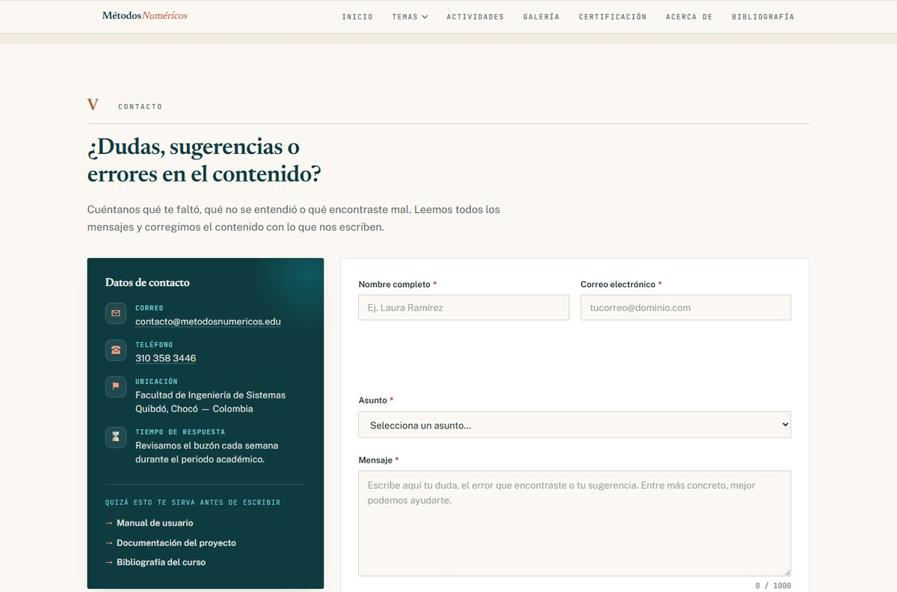
Resultado esperado
Aparece una confirmación con su nombre y el mensaje queda registrado en el buzón del sitio.
Corregir errores del formulario
- Actor
- Cualquier visitante
- Objetivo
- Entender e interpretar los avisos de validación.
Precondiciones
- Estar completando el formulario de contacto (CU-15).
Procedimiento
- Si intenta enviar con datos incompletos, los campos afectados se marcan en rojo.
- Bajo cada campo aparece el motivo concreto: nombre demasiado corto, correo con formato inválido, asunto sin elegir o mensaje demasiado breve.
- Corrija los campos señalados. El aviso desaparece en cuanto el dato es válido.
- Vuelva a pulsar Enviar mensaje.
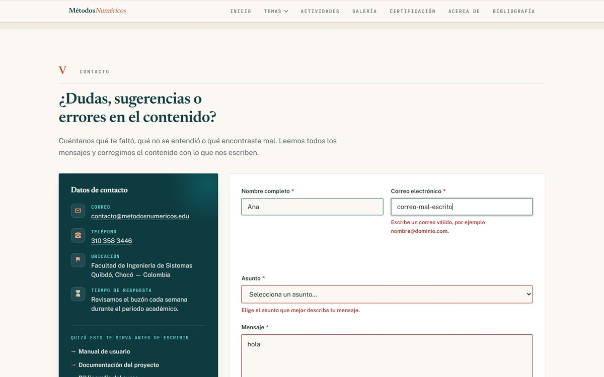
Resultado esperado
El formulario se envía cuando todos los campos son válidos.
Consultar el buzón de sugerencias
- Actor
- Responsable del sitio
- Objetivo
- Leer y gestionar los mensajes recibidos por el formulario de contacto.
Precondiciones
- Tener acceso a la dirección
buzon.php.
Procedimiento
- Abra el enlace Buzón de sugerencias del pie de página.
- Se muestra el total de mensajes y cuántos están sin leer.
- Cada tarjeta muestra el remitente, su correo, la fecha y el asunto elegido.
- Pulse Marcar leída para quitarle la etiqueta de nuevo, o Eliminar para borrarlo.
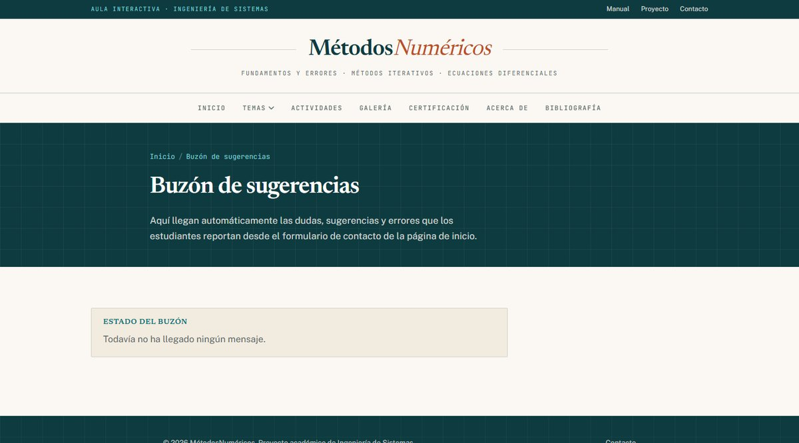
data/sugerencias.json.Resultado esperado
El responsable gestiona los mensajes recibidos.
Explorar la galería de diagramas
- Actor
- Estudiante
- Objetivo
- Repasar visualmente la idea central de cada método.
Precondiciones
- Ninguna.
Procedimiento
- Pulse Galería en la barra de navegación.
- Use los filtros superiores para mostrar solo los diagramas de un bloque temático.
- Cada diagrama incluye un pie que explica qué representa.
- Pulse Ir al tema completo para abrir la página correspondiente.
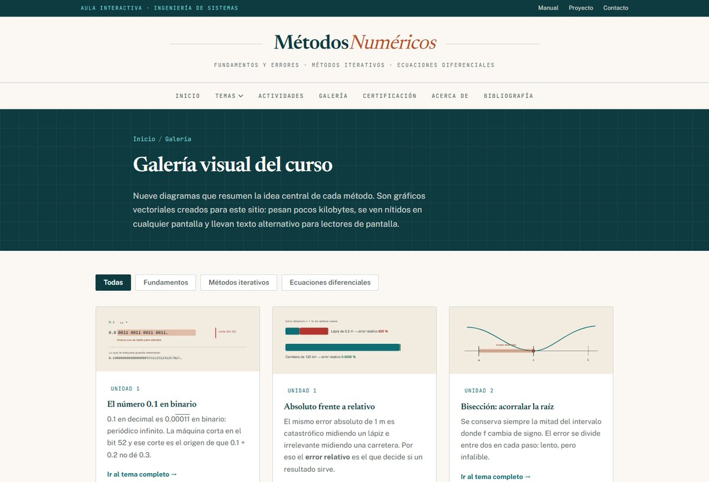
Resultado esperado
El estudiante repasa visualmente los métodos.
Ajustar la accesibilidad
- Actor
- Cualquier visitante
- Objetivo
- Adaptar la presentación a las necesidades de lectura de cada persona.
Precondiciones
- Ninguna.
Procedimiento
- Pulse el botón Aa Accesibilidad, fijo en la esquina inferior derecha de todas las páginas.
- Ajuste el tamaño de letra con los botones A− y A+ (cuatro niveles).
- Elija un modo de color: normal, alto contraste, oscuro o lectura fácil.
- Utilice la lectura en voz alta si desea escuchar el contenido.
- Pulse Restablecer para volver a la presentación original.
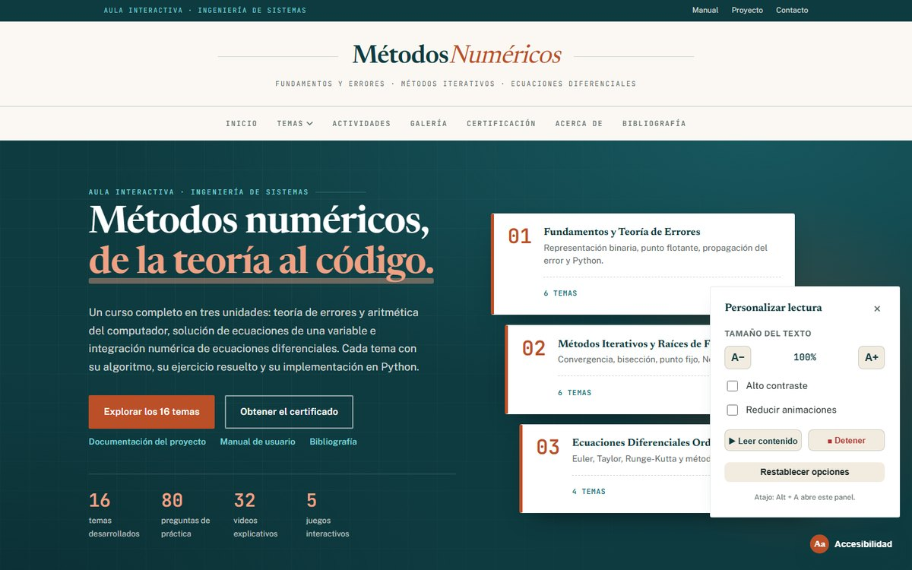
Resultado esperado
El sitio se adapta a las preferencias indicadas.
Usar el sitio en el teléfono
- Actor
- Cualquier visitante
- Objetivo
- Consultar el curso desde un dispositivo móvil.
Precondiciones
- Abrir el sitio en el navegador del teléfono.
Procedimiento
- La cabecera se compacta y el menú se recoge tras el botón de tres líneas (☰), arriba a la derecha.
- Púlselo para desplegar la navegación completa.
- Las tarjetas y los formularios pasan a una sola columna.
- En las páginas de tema, el sumario se convierte en una tira horizontal desplazable.
- Las tablas anchas de iteraciones se desplazan lateralmente dentro de su propio recuadro, sin descuadrar la página.
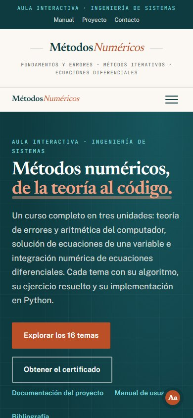
Resultado esperado
El sitio es plenamente utilizable en el teléfono.
5Problemas
Solución de problemas frecuentes
| Síntoma | Causa probable | Solución |
|---|---|---|
| La página no carga | Apache detenido | Inicie Apache en el panel de XAMPP |
| Se ve sin estilos o desactualizado | Caché del navegador | Pulse Ctrl + F5 |
| Los juegos no responden | JavaScript desactivado | Actívelo en la configuración del navegador |
| El progreso aparece en cero | Navegación privada o datos del sitio borrados | El progreso se guarda en el navegador; use una ventana normal |
| Los videos no se ven | Sin conexión o bloqueo de contenido incrustado | Use el enlace Ver en YouTube |
| El certificado no llega al correo | Credenciales de envío sin configurar | Descargue el PNG con el otro botón |
| El formulario no envía | Algún campo no es válido | Revise los campos marcados en rojo (CU-16) |
6Glosario
Glosario de términos
- Bloque temáticoCada una de las tres agrupaciones en que se divide el curso: fundamentos y errores, métodos iterativos y ecuaciones diferenciales.
- DominioPorcentaje de preguntas de un bloque que el estudiante ha respondido correctamente al menos una vez.
- RachaNúmero de aciertos consecutivos dentro de una partida. A partir de tres, multiplica los puntos.
- Repaso inteligentePartida formada únicamente por las preguntas que el estudiante ha fallado antes.
- MedallaDistinción que resume el resultado de una partida: bronce, plata, oro o platino.
- Tabla de iteracionesTabla que muestra, paso a paso, los valores que va calculando un método numérico y su error.
- Sumario lateralÍndice de apartados que acompaña a cada página de tema y resalta la sección en lectura.